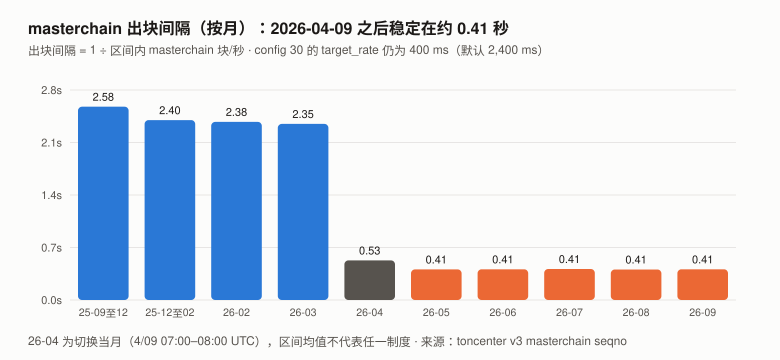
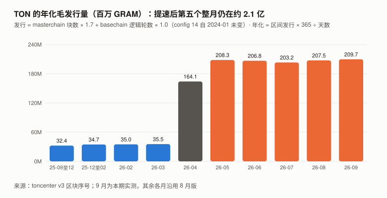
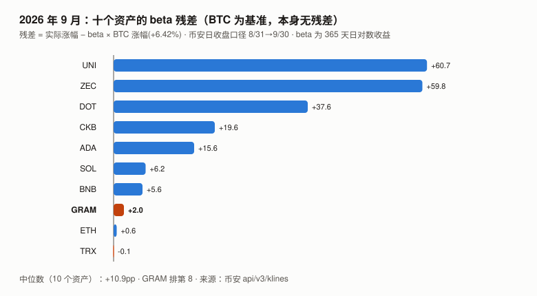

GRAM / TON 完整调研与分析报告
版本：2026 年 9 月（兼 Q3 回顾）
完成日期：2026-10-06
本系列第十三个资产的第二期代号说明：标的是 The Open Network（TON）的原生代币，2026 年 6 月由 Toncoin（TON）更名为 Gram（GRAM）。
本报告用 GRAM 指代币、TON 指区块链。本版更新要点：
- 8 月版最大的未核实项本期一手解决：Telegram 原生钱包 8/31 小范围上线，而且它的代码住在网络配置里。
本期自建了 TON 配置字典的 BoC 解析器，读出 8 月版读不到的config -123：
它在 2026-08-28 09:13 UTC 首次写入，2026-09-30 18:15 UTC 第 1 次升级（验证者投票）。
官方仓库ton-blockchain/tg-wallet-contract的 README 写明：每个 Telegram 钱包只是一个跳转到config[-123]的「蹦床」合约，
钱包逻辑「只能由验证者投票更新」、「对所有用户一次生效」、「没有『关闭更新』的选项」。
Durov 8/31 在其 Telegram 频道宣布钱包「对一小部分用户开放」（一手）。- 验证者配置投票的管辖范围扩大到了钱包代码。 钱包在设计上覆盖全部 Telegram 用户（当前为小范围开放，规模未测）；
一次投票可让所有钱包免迁移升级，也意味着一次投票改变所有钱包的逻辑。与 8 月版的增发问题不同，这一后果是公开宣传的（README、Durov 都把它当作卖点）。- 发行机制没有变化，第五个整月仍是约 2.1 亿 GRAM / 年：9 月毛发行 17,231,135 GRAM（年化 4.00%），
config 14与config 309 月均未变。9 月两路核对的残差 29,291 GRAM，与抽样估计的手续费销毁（95% 区间 17,675–36,805）相容；
但用同一方法回测 8 月，8 月残差 70,527 约为当月销毁估计（36,948）的 1.9 倍、在其 95% 区间之外——残差里还有与销毁同量级的其他成分，未解释。- 价格：9 月 +8.15%（BTC +6.42%），残差 +2.0pp，与本系列 10 个山寨资产的残差中位数（+10.9pp）不可区分（相差约 0.5 个月度标准差）；
Q3 −6.25%（BTC +42.64%），残差 −46.8pp，同口径 10 个资产的中位数为 +3.8pp，GRAM 排最后。- 8 月版 G8-5 的起点用错了 BTC 价格（CoinGecko 8/31 00:00 点 = 8/30 收盘，与 XIN、CKB 9 月版同一个错），本期按登记口径更正。
本报告不给目标价。 理由见第 10 章。
利益冲突声明：作者未持有 GRAM，与 TON 基金会、Telegram 及任何 TON 生态项目无雇佣、顾问或投资关系。
本报告的链上数据全部由作者从 TON 公开节点 API（toncenter / tonapi）与 GitHub 一手仓库直接抓取。
核心结论摘要（一页速览）
| 维度 | 观测 | 判断 |
|---|---|---|
| 价格（9/30） | $1.5000；9 月 +8.15%（BTC +6.42%）；Q3 −6.25%（BTC +42.64%） | 9 月残差 +2.0pp，与板块中位数不可区分；Q3 残差 −46.8pp（板块中位数 +3.8pp） |
| Telegram 钱包 | config -123 8/28 首次写入、9/30 第 1 次升级；Durov 8/31 宣布小范围开放 |
8 月版的搜索摘要本期得到两条一手证据；采用规模未测 |
| 钱包代码的治理 | 钱包逻辑存在 config[-123]，只能由验证者投票更新，对所有用户一次生效 |
验证者配置投票的管辖范围扩大到钱包代码；这一后果是公开宣传的 |
| 发行 | 9 月毛发行 17,231,135 GRAM，年化 2.096 亿 / 4.00% | 与 8 月（2.075 亿 / 3.97%）基本相同 |
| 两路核对 | 模型 − 链上净增 = 29,291 GRAM（0.17%） | 9 月与销毁估计相容；8 月同法回测约为销毁的 1.9 倍，未解释 |
| 手续费（抽样估计） | 9 月约 54,480 GRAM（95% 区间 35,350–73,609），约一半被销毁 | 约为毛发行的 0.32% |
| USD₮ on TON | 1,429,976,003 枚（取整），与 9/11 读数相同；持有人 3,451,380（+0.8%） | 9 月稳定币存量没动 |
| 质押 | Elector 13.61 亿（流通量 48.27%）；384 个验证者；前 10 名 4.51% | 与 8 月相近 |
| 质押池 APY | 12.78%–17.05% | 8 月 13.29%–17.72% |
| 本报告给目标价 | 否 | 见第 10 章 |
一句话：Telegram 钱包的逻辑放在 TON 的网络配置里，由验证者投票更新——对用户是免迁移的升级，对治理是一次投票改变全部钱包；
设计上覆盖全部 Telegram 用户，当前为小范围开放，规模未测。与 8 月版的增发不同，这一安排是公开宣传的。
1. GRAM 是什么
协议层面与 8 月版相同，三个要点：
| 内容 | |
|---|---|
| 发行 | config 14：每个 masterchain 区块 1.7 GRAM、每个 basechain 逻辑轮 1.0 GRAM；按块发放，发行速率 = 每块奖励 × 出块速率 |
| 出块 | config 30（Simplex 共识）的 target_rate 自 2026-04-09 由默认 2,400 ms 设为 400 ms |
| 配置治理 | 配置变更：每轮需质押加权 3/4 赞成；普通参数需赢 min_wins = 2 轮、关键参数 3 轮（config 11；源码 crypto/smartcont/config-code.fc 第 285、236 行）。关键参数表见 config 10（10/01 链上读数：−1001、−1000、0、1、9、10、12、14、15、16、17、32、34、36） |
1.1 本期补：config -123 读出来了（8 月版下期清单第一优先）
8 月版尝试读 config -123 失败：toncenter 拒绝负数索引，tonapi 只解码非负键。本期自建了 BoC 反序列化器与 HashmapE 32 解析器，
直接解析 toncenter getConfigAll 返回的整个配置字典：
| 时点（UTC） | masterchain 区块 | 负数参数 | config -123 的单元哈希 |
|---|---|---|---|
| 2026-08-01 00:00 | 83,218,323 | −1000 / −999 / −90 / −71 | 不存在 |
| 2026-08-28 09:13（首次写入） | 89,030,998 | 新增 −123 | 6f177fd8…6c4406 |
| 2026-09-01 00:00 | 89,799,586 | 同上 | 6f177fd8…6c4406 |
| 2026-09-30 18:15（第 1 次升级） | 96,085,082 | e3091142…a70e2c |
|
| 2026-10-01 00:00 | 96,135,401 | e3091142…a70e2c |
|
| 2026-10-06 | 当前 | e3091142…a70e2c |
解析器的独立核对：本报告算出的 8 月版本哈希
6f177fd8…与 vote.ton.org（官方文档链接的配置投票面板）脚本里硬编码的「WalletTg revision 00」常量逐位相同；
9/30 之后的e3091142…与该面板标注为「Adds external-out key rotation events」的版本逐位相同。两个外部常量都对上，说明解析与哈希算法是对的。⚠️ 一个本报告修过的错：初版的单元哈希缓存以 Python 对象
id()为键，跨多次解析时 id 被复用，二分查找一度给出错误时点（9/01、9/18）。
修正后重跑，时点为上表的 8/28 09:13 与 9/30 18:15。
写入时点与 8 月版的观测对齐：8 月版第 5 章记录「2026-08-28 09:00 config 30 72 → 96 字节」——config -123 的首次写入在同一小时，
推断为同一轮配置变更（同一小时内的两处变更，本报告未取得提案记录）。
2. GRAM 的发展阶段划分
| 阶段 | 时间 | 标志 |
|---|---|---|
| 一 · Telegram 立项与 SEC 叫停 | 2018 – 2020 | 代币原名 Gram |
| 二 · 社区接手与 PoW 分发 | 2020 – 2022 | 更名 Toncoin，PoW 挖矿分发 |
| 三 · Telegram 生态回归 | 2023 – 2024-06 | 2024-06-14 ATH $8.25 |
| 四 · 回落与共识重写 | 2024-07 – 2026-03 | Catchain → Simplex |
| 五 · 提速、更名与钱包 | 2026-04 – 至今 | 04-09 出块提速 6 倍（发行随之 5.85 倍）；06 月更名 Gram；08-28 钱包代码写入配置、08-31 小范围开放、09-30 首次投票升级 |
3. GRAM 当前现状
3.0 论点校验：8 月版登记的 6 条（待 2027-08 核）
| # | 论点 | 证伪条件（摘要） | 9 月读数 | 判定 |
|---|---|---|---|---|
| G8-1 | TON 不会下调区块奖励来抵消增发 | 2027-08-31 前 masterchain_block_fee 曾 < 1.7 GRAM 则错 |
config 14 10/06 仍为 …6b46553f10043b9aca00…（1.7 / 1.0） |
⏳ |
| G8-2 | 出块速率还会继续提高 | 2027-08 区间 masterchain 平均 < 2.703 块/秒则错 | 9 月 2.444 块/秒（8 月 2.457） | ⏳ |
| G8-3 | USD₮ 规模不会因 Telegram 钱包出现数量级增长 | 2027-08-31 USD₮ ≥ 2,144,964,004 则错 | 1,429,976,003（取整），与 9/11 读数相同 | ⏳ |
| G8-4 | 质押率不会显著上升 | 2027-08-31 Elector ÷ 流通量 ≥ 58.0% 则错 | 48.27%（10/06） | ⏳ |
| G8-5 | GRAM 未来一年不会相对 BTC 显著跑赢 | 2027-08-31 比价 ≥ 起点 1.30 倍则错 | 1.016 倍（起点已更正，见 3.2） | ⏳ |
| G8-6 | 那次发行变更不会被追认为货币政策决定 | 找到 4/09 变更的提案记录且提及发行影响 / 官方把它作为发行变更说明 / config 14 因此下调，任一则错 |
9 月未见任一项：配置投票面板只显示活跃提案；ton-blockchain/docs 9 月 22 次提交中唯一涉及区块奖励的一条（9/16）只是通用描述 |
⏳ |
本期新登记两条论点（G9-1：12 月 GRAM/BTC 月均比价较 9 月再跌 ≥5%；G9-2：
config -123会继续被频繁升级。本期没有核心判断条目），拒绝登记两类（钱包数量、手续费规模），见../thesis_scorecard.md。
3.1 价格与市场
口径：币安 UTC 日收盘价。9 月 = 8/31 → 9/30；Q3 = 6/30 → 9/30（6/30 为 TONUSDT 最后一根，收 $1.6000；GRAMUSDT 7/02 首根开 $1.6000，1:1 连续）。
| 指标 | 值 |
|---|---|
| 9/30 收盘 | $1.5000 |
| 10/06 价格 / 市值 / 排名（CoinGecko） | $1.56 / $43.998 亿 / 第 32 位（8 月版 28） |
| 流通量 / 总供应量（CoinGecko，10/06） | 2,820,409,257 / 5,261,538,536 |
| 9 月 / Q3 | +8.15% / −6.25%（BTC +6.42% / +42.64%） |
| 9 月盘中区间 | $1.286（9/16）– $1.74（9/28） |
| 年初至今 / 近一年 | −9.58% / −44.65%（BTC −4.59% / −26.68%） |
| 距 ATH | −81.82%（$8.25，2024-06-14） |
| 币安 9 月日成交额（中位 / 均值） | $909.2 万 / $1,221.5 万（8 月 $512.7 万 / $712.8 万） |
Q3 逐月残差（beta 0.951）：
| 月份 | GRAM | BTC | 残差 |
|---|---|---|---|
| 7 月 | −12.13% | +7.27% | −19.0pp |
| 8 月 | −1.35% | +24.95% | −25.1pp |
| 9 月 | +8.15% | +6.42% | +2.0pp |
| Q3 | −6.25% | +42.64% | −46.8pp |
9 月残差 +2.0pp，同月本系列 10 个山寨资产的残差中位数 +10.9pp（见 8.2）。 GRAM 过去 12 个月的月度残差标准差约 18.1pp，
两者相差约 0.5 个标准差——与板块中位数不可区分，本报告不据此做任何解读。
Q3 同口径（6/30 → 9/30，各资产自身 beta）：10 个资产残差中位数 +3.8pp，GRAM −46.8pp 排最后；按月度标准差折算的季度标准差约 31pp，相差约 1.6 个标准差。
盘中高点 $1.74 出现在 9/28，二手报道称当天钱包开始全面推送，本报告未取得一手确认（Durov 频道 9/11 之后没有新帖），不作归因。
3.2 数据口径：G8-5 起点更正
8 月版记分卡写「起点 0.0000178603（GRAMUSDT ÷ BTCUSDT，币安 UTC 日收盘）」。
本期复算：0.0000178603 = $1.3870 ÷ 77,658.231，而 77,658.231 是 CoinGecko 2026-08-31 00:00 UTC 的数据点（= 8/30 收盘），不是币安 8/31 收盘 78,581.29。
| 起点口径 | 起点比价 | 9/30 比价 | 倍数 |
|---|---|---|---|
| 8 月版写下的数 | 1.78603e-5 | 1.79375e-5 | 1.004 |
| 按登记口径更正（均为币安 8/31 收盘） | 1.76505e-5 | 1.79375e-5 | 1.016 |
按登记口径更正；更正后的倍数离判错线 1.30 更近，对作者不利。这是 XIN、CKB 9 月版发现的同一个错，在 GRAM 8 月版里同样存在。
3.3 风险特征（币安拼接序列，2025-09-30 至 2026-09-30）
| 指标 | GRAM | BTC |
|---|---|---|
| 年化波动率 | 80.5% | 45.0% |
| beta | 0.951 | 1.000 |
| R² | 0.283 | — |
校验：R² = (0.951 × 45.0% ÷ 80.5%)² = 0.283 ✓。拼接序列缺 2026-07-01 一天（代号迁移），该日两侧的收益不计入。
3.4 宏观环境
与 BTC 9 月版共用（美联储 9/16 加息 25bp 至 3.75–4.00%）。GRAM 的 R² 为 0.283，宏观经 BTC 传导只能解释其不到三成的日波动。
4. 发行：第五个整月，机制未变
4.1 9 月的出块与发行
| 端点（UTC） | masterchain seqno | basechain seqno（单分片 8000000000000000） |
|---|---|---|
| 2026-09-01 00:00 | 89,799,586 | 94,181,404 |
| 2026-10-01 00:00 | 96,135,401 | 100,641,653 |
| 差 | 6,335,815 | 6,460,249 |
8 月版的两个端点（83,218,323 → 89,799,586；87,749,789 → 94,181,404）本期复现一致。
| 项 | 值 |
|---|---|
| masterchain 块/秒 | 2.444（出块间隔 0.41 秒） |
| basechain 逻辑轮/秒 | 2.492 |
毛发行（区块数 × config 14） |
6,335,815 × 1.7 + 6,460,249 × 1.0 = 17,231,135 GRAM |
| 年化 | 2.096 亿 GRAM，对 9/01 总供应量 5,241,171,395 为 4.00% |

图中数字：各月出块间隔 2.58 / 2.40 / 2.38 / 2.35 / 0.53 / 0.41（2026-05 至 09 各月均为 0.41）秒；纵轴 0.0s / 0.7s / 1.4s / 2.1s / 2.8s。

图中数字：年化毛发行 32.4 / 34.7 / 35.0 / 35.5 / 164.1 / 208.3 / 206.8 / 203.2 / 207.5 / 209.7（百万 GRAM）；纵轴 0M / 60M / 120M / 180M / 240M。9 月为本期实测，其余沿用 8 月版。
9 月配置变更：逐项比对 0–45、71–81 号参数在 9/01 与 10/01 的取值，只有 config 32 / 34（每轮必换的验证者集）变化；
config 14（区块奖励）、config 30（共识节奏）、config 31（基础合约白名单，仍为 9 个）均未变。唯一的协议级变更是负数参数 -123（第 5 章）。
4.2 两路核对：9 月与销毁相容，8 月仍未解释
| 路径 | 值 |
|---|---|
① 区块数 × config 14 |
17,231,135 GRAM（毛发行） |
② 链上余额加总（masterchain + basechain 的 from_prev_blk，10/01 − 9/01） |
5,258,373,238 − 5,241,171,395 = +17,201,843 GRAM |
| 残差 | 29,291 GRAM = 毛发行的 0.17%（8 月 70,527 / 0.40%） |
本期补测了手续费（8 月版下期清单第三优先）：在 9 月 6,335,815 个 masterchain 区块里随机抽 300 个，读每块 ValueFlow：
| 项 | 每块均值 | × 6,335,815 块 | 95% 区间 |
|---|---|---|---|
| 手续费（basechain 导入部分 + masterchain 自身部分） | 0.008599 GRAM | 约 54,480 GRAM | 35,350 – 73,609 |
其中销毁（burned） |
0.004299 GRAM | 约 27,240 GRAM | 17,675 – 36,805 |
方法说明：masterchain 块的
fees_imported= 导入的 basechain 区块奖励（每逻辑轮 1.0 GRAM）+ basechain 手续费；
本期取其小数部分作为 basechain 手续费。这一前提已独立检验：从 300 个样本中随机取 80 个，用 toncentermasterchainBlockShards数出每个 masterchain 块导入的 basechain 块并按分片深度扣除奖励（1 ÷ 2^深度），两法逐块结果完全相同（最大差 0），单块手续费最大 0.0905 GRAM；
masterchain 自身手续费 =fees_collected + burned − created − fees_imported。销毁约为手续费的一半，与实测样本块（burned1,237,334 nanogram ÷ 导入手续费 2,474,669 = 50.0%）一致。9 月：路径 ② 少掉的 29,291 GRAM，落在销毁估计的 95% 区间内。销毁正是会让余额加总低于发行的那一项。
用同一套方法回测 8 月（8 月 6,581,263 个 masterchain 块中随机抽 300 个）：
| 8 月 | 估计 | 95% 区间 |
|---|---|---|
| 手续费 | 约 73,896 GRAM | 40,467 – 107,326 |
| 销毁 | 约 36,948 GRAM | 20,233 – 53,663 |
| 两路核对残差（8 月版） | 70,527 GRAM | — |
⚠️ 本表初版的 8 月手续费是 298,756 GRAM，算错了，已更正：8/08–8/13 basechain 分片期间，导入的子分片块奖励是 0.5 或 0.25 GRAM，「取小数部分」会把它当成手续费（300 个样本中 20 个块受影响）。
改为「对 0.25 取余」（深度 ≤ 2 的分片奖励都是 0.25 的倍数）后，8 月、9 月的「销毁 ÷ 手续费」都等于 0.5000——burned是独立字段，这个比值是对手续费口径的内部核对。
9 月没有分片，两种取法结果相同。前文「小数部分法已独立检验」只覆盖 9 月样本；8 月的检验就是这次发现错误的过程。8 月残差约为销毁估计的 1.9 倍，落在销毁的 95% 区间之外。 两个月对「残差是什么」给出的答案不同：
9 月残差与销毁相容；8 月残差里还有与销毁同量级的其他成分（候选：在途消息价值、total_validator_fees的变动、8/08–8/13 分片期间的逻辑轮计数误差），本报告没有分开测量，8 月版那个缺口仍未解释——
本期只是把 8 月版的量级推算（$0.0003/笔）换成了实测分布（8 月约 0.000698 GRAM/笔，与 9 月的 0.000638 一致），没有关闭它。
⚠️ 9 月的「相容」也不能说成「残差就是销毁」：上述其他成分在 9 月同样没有单独测量，只是在抽样精度内看不出它们。
5. Telegram 钱包：代码在配置里（本期核心章）
5.1 一手证据
| 证据 | 内容 | 等级 |
|---|---|---|
| Durov 频道 2026-07-21 | 「今年夏天将是人类历史上最大规模的非托管加密钱包推送……我们将把原生非托管 Gram 钱包带到每一个 Telegram 应用」 | ✅ 一手（t.me/s/durov，帖 533） |
| Durov 频道 2026-08-31 16:30 UTC | 「Telegram 里的 Gram 钱包已就绪，现在对一小部分用户开放。我们会在接下来几周内逐步推送给十亿以上用户。感谢批准了驱动它的智能合约的验证者，钱包未来的升级将不需要痛苦的迁移。」 | ✅ 一手（帖 546） |
ton-blockchain/tg-wallet-contract |
2026-08-27 13:43 创建；描述「Bytecode stays in config and is updated by validator voting」 | ✅ 一手（GitHub） |
config -123 |
8/28 09:13 写入，9/30 18:15 更新（1.1 节） | ✅ 一手（链上） |
| 「9/28 全面推送」 | 若干报道 | ❌ 二手；Durov 频道 9/11 之后无新帖，未采用 |
8 月版第 5.2 节把「2026-08-31 Telegram 开始推送原生钱包」标为「搜索摘要，未取得一手确认」，并把它列为下期第二优先。本期两条一手证据坐实了「8/31 小范围开放」。
采用规模（多少个钱包、多少活跃）本期未测——见 5.4。
5.2 架构：每个钱包是一个蹦床，逻辑在 config[-123]
仓库 README 原文（节译）：
每个已部署的钱包并不把
WalletTg存为自己的账户代码，而是存一个极小的、不可变的蹦床合约。
蹦床只做一件事：JMP到config[-123]，真正的WalletTg字节码放在那里——所有 Telegram 用户共用。
- 所有 Telegram 钱包使用同一份最新的钱包逻辑；
- 蹦床永不改变，只有配置里的字节码会变；
-WalletTg的改进一次性作用于所有 Telegram 用户；
- 用户没有「更新」动作，也没有「关闭更新」的选项。配置里的字节码只能由验证者投票更新。 一旦验证者投票通过，所有钱包立即获得新功能。
蹦床源码（contracts/WalletTrampoline.fif）的注释：「如果一百万个用户创建钱包，就会部署一百万个小蹦床合约，它们都跳到配置里的字节码……
新版本做好后，验证者投票通过新配置，新字节码原子性地更新所有用户的钱包逻辑。」
5.3 这对治理意味着什么
| 问题 | 答案（一手） |
|---|---|
| 谁能改 Telegram 钱包的逻辑？ | 验证者，按配置变更程序：每轮需质押加权 3/4 赞成；普通参数需赢 min_wins = 2 轮、关键参数 3 轮（config 11；源码 crypto/smartcont/config-code.fc 第 285、236 行）。-123 不在 config 10 的关键参数表里（10/01 链上读数），属普通参数，需赢 2 轮 |
| 用户能拒绝升级吗？ | 不能（README：「没有『关闭更新』的选项」） |
| 9 月改过吗？ | 改过一次：9/30 18:15，6f177fd8… → e3091142… |
| 新版本做了什么？ | 据 vote.ton.org 面板注释：「为共享的 WalletTg 代码加入外发的密钥轮换事件」 |
| 链上字节码与公开源码对得上吗？ | ⚠️ 本报告未自行编译核对。 同一面板注释写着「下方的相关提交使用了不同的事件标签，产生的字节码与本提案不同」；仓库 9/29 有一次提交「update rev00: emit ext-out on ChangePublicKeyRequest」 |
验证者配置投票的管辖范围扩大到了钱包代码：原本管共识节奏、验证者集的同一套投票程序，现在也决定所有 Telegram 钱包的逻辑。
这与 8 月版的增发问题不同类：8 月的问题是发行后果没有被任何一方当作货币政策提出；而钱包代码由验证者投票更新这一后果，是 README 和 Durov 公开宣传的设计。能说的：这是公开、可审计、有一手文档的设计选择，README 自己把「不需要迁移」列为优点，Durov 也把它当作卖点。
不能说的：它是否安全、验证者是否会审查每一次字节码——本报告只观察到一次升级，且没有读到对应的提案讨论（配置投票面板只显示活跃提案）。
但面板注释本身是一条「有人在投票前比对字节码」的部分证据：它把提案字节码与源码提交逐一对照，并指出两者不一致。
⚠️ 面板注释里「提交与提案字节码不一致」那一句是第三方面板的说法，本报告没有用 Tolk / Acton 自行编译验证，列入下期核对。
5.4 采用规模：本期没有测到
- 钱包数量：每个 Telegram 钱包是一个蹦床合约，原理上可以按蹦床代码哈希枚举；toncenter v3 与 tonapi 的公开接口都没有按代码哈希检索账户的入口，本期未做。
- USD₮ 存量：10/06 为 1,429,976,002.51 枚（取整 1,429,976,003），与 8 月版 9/11 的读数相同；持有人 3,423,842 → 3,451,380（+0.8%）。
- 8 月版 5.1 的
9234809b…合约（8/20 被写入config 31的特殊合约）：代码哈希10b3b24d…24cac，与config -123的两个版本都不同，
余额 0.995 GRAM，无已知接口。它与钱包的关系本期仍无法证明。
6. 质押、验证者与安全预算
| 口径 | 10/06 | 8 月版（9/11） |
|---|---|---|
| Elector 合约余额 | 1,361,340,435 GRAM | 1,337,746,378 |
| ÷ 流通量 | 48.27% | 48.0% |
| 当前轮有效质押 | 667,200,634 GRAM | 659,467,380 |
| 验证者数 | 384 | 390 |
| 前 10 / 前 50 名占质押 | 4.51% / 21.09% | 3.99% / 19.70% |
| 单个验证者质押 最大 / 最小 | 3,051,426 / 757,563 | 2,680,089 / 686,401 |
| 质押池（tonapi，10/06） | 规模（GRAM） | 池数 | APY |
|---|---|---|---|
| TF 提名池 | 205,492,716 | 1,073 | 17.05% |
| Tonstakers（liquidTF） | 135,653,191 | 1 | 12.99% |
| Whales / Tonkeeper | 29,964,368 | 6 | 12.78% – 13.98% |
| 合计 | 371,110,276 | 1,080 | 12.78% – 17.05% |
APY 仍按 8 月版的限定读：不是 1,080 份独立测量（TF 与 Whales 共用同一上游取值），只作一致性检查。
安全预算：9 月毛发行 17,231,135 GRAM × 9 月均价 $1.4119 ≈ $2,433 万；年化约 $2.96 亿，约为 9/30 市值的 7.0%（8 月版 7.59%）。
手续费（约 54,480 GRAM ≈ $7.7 万）约为区块奖励的 0.32%——安全预算几乎全部来自发行，即来自未质押者的稀释。
7. 网络使用与开发
| 指标 | 9 月 | 口径 |
|---|---|---|
| basechain 交易数 | 约 8,537 万笔（日均约 285 万） | 抽样估计：200 个随机区块（每块均值 13.2 笔）× 6,460,249 个逻辑轮；95% 区间 7,399 万 – 9,675 万 |
| USD₮ on TON | 1,429,976,003 枚 / 3,451,380 持有人 | jetton master 直读 |
| 手续费 | 约 54,480 GRAM（4.2 节） | 300 个 masterchain 区块抽样 |
| 仓库（9 月提交数） | 9 月 | 8 月 |
|---|---|---|
ton-blockchain/ton（L1 核心） |
22 | 62 |
ton-blockchain/acton（合约工具链） |
501 | 184 |
ton-blockchain/docs |
22 | 26 |
ton-blockchain/tg-wallet-contract |
1（9/29） | 1（8/27 初版） |
与 8 月（约 1.059 亿，95% 区间 7,461 万 – 1.371 亿）的区间重叠，不能说 9 月交易数下降。 单笔手续费（同一口径：当月手续费抽样估计 ÷ 当月交易数抽样估计）：9 月约 0.000638 GRAM（约 $0.0009），8 月约 0.000698 GRAM；8 月版的「$0.0003/笔」是另一口径（
fees_collected − created的量级推算，美元计），不可逐格比较。
9 月没有节点发版（最近一版仍是 v2026.08，08-17）；10/03 发布了合约语言 tolk-1.5。
8 月版担心的「collator 分离会继续抬高出块能力、从而抬高发行」9 月没有发生：出块速率 2.444 块/秒，略低于 8 月。
8. GRAM 与其他资产的比较
口径声明：9 月涨幅统一为币安 8/31 → 9/30 日收盘；波动率 / beta / R² 为币安 365 天日对数收益（2025-09-30 至 2026-09-30）。
XIN 不在币安、HYPE 在币安 9/24 才有日线，本表不列。 8 月版本表用 CoinGecko 口径，两期不可逐格对比。
8.1 矩阵
| 指标 | GRAM | UNI | ZEC | DOT | CKB | ADA | SOL | BNB | ETH | TRX | BTC |
|---|---|---|---|---|---|---|---|---|---|---|---|
| 9 月涨幅 | +8.15% | +69.76% | +69.60% | +45.60% | +27.49% | +24.67% | +14.61% | +11.26% | +8.85% | +1.44% | +6.42% |
| 年化波动率 | 80.5% | 99.8% | 156.2% | 87.6% | 80.6% | 79.3% | 68.0% | 51.6% | 63.7% | 24.4% | 45.0% |
| beta | 0.951 | 1.403 | 1.523 | 1.247 | 1.226 | 1.419 | 1.311 | 0.883 | 1.283 | 0.238 | 1.000 |
| R² | 0.283 | 0.401 | 0.193 | 0.412 | 0.469 | 0.649 | 0.755 | 0.594 | 0.823 | 0.193 | 1.000 |
8.2 9 月的 beta 残差

图中数字：UNI +60.7、ZEC +59.8、DOT +37.6、CKB +19.6、ADA +15.6、SOL +6.2、BNB +5.6、GRAM +2.0、ETH +0.6、TRX −0.1（百分点）；中位数 +10.9pp。
8 月 GRAM 的残差是十二个资产里最负的（8 月版排名用 CoinGecko 口径 −27.78pp；币安口径 −25.48pp）；9 月是十个里第 8。 9 月是一个「山寨普遍跑赢 BTC」的月份；GRAM 的 +2.0pp 与中位数 +10.9pp 相差约 0.5 个月度标准差，不可区分。
9. 核心价值逻辑
评分规则：星级编码证据等级，另列后果量级；同源论据必须标注。
9.1 多头逻辑
| # | 论据 | 证据等级 | 后果量级 | 说明 |
|---|---|---|---|---|
| 1 | Telegram 原生钱包 8/31 小范围上线；按官方计划将逐步推送（未核实）；代码 8/28 首次写入配置、9/30 第 1 次升级 | ★★★★ | 大（若采用起量） | 一手：Durov 频道 + 链上 config -123 + 官方仓库。由 8 月版的 ★★ 升级。⚠️ 采用规模未测，后果量级按「若起量」标注 |
| 2 | 钱包升级不需要用户迁移：一次投票，所有钱包同时获得新功能 | ★★★★ | 中 | 一手（README）。⚠️ 与空头 #2 是同一机制的两面 |
| 3 | 稳定币规模真实：USD₮ 14.30 亿枚、345 万持有人 | ★★★★★ | 中 | 一手。⚠️ 9 月一枚未增（空头 #4） |
| 4 | 验证者集分散：384 个，前 10 名 4.51% | ★★★★★ | 中 | 一手 |
| 5 | 成交放大：币安日成交中位数 $909 万（8 月 1.8 倍） | ★★★ | 小 | 一手。与 9 月价格上涨同源 |
9.2 空头逻辑
| # | 论据 | 证据等级 | 后果量级 | 说明 |
|---|---|---|---|---|
| 1 | 发行第五个整月维持约 2.1 亿 / 年（4.00%），安全预算几乎全部来自稀释，手续费只占约 0.32% | ★★★★ | 大 | 一手：区块数 × config 14 + 余额加总 + 手续费抽样。⚠️ 8 月版事件窗未观测到市场对 4/09 提速的负面反应，本条是「已发生、定价状态不明」的事实 |
| 2 | 验证者投票同时控制全部 Telegram 钱包的代码，用户不能拒绝升级 | ★★★★ | 大（前瞻） | 一手（README + 链上）。⚠️ 与多头 #2 同源。这是风险面，不是已发生的损失——本报告没有观察到任何恶意升级 |
| 3 | Q3 −6.25%，残差 −46.8pp，同口径 10 个资产中位数 +3.8pp，排最后 | ★★★★★ | 中 | 一手。9 月残差 +2.0pp 与板块中位数不可区分，不作论据 |
| 4 | 9 月 USD₮ 存量未变 | ★★★★ | 中 | 一手。⚠️ 一个月样本；钱包为小范围开放，不能读作「采用效应没有出现」 |
多空同源检查：多头 #2 与空头 #2 是同一个设计——「一次投票更新所有钱包」，对用户是免迁移，对治理是单点。
后果量级保留「中 / 大」，理由是尾部损失不对称：免迁移升级的好处是逐次、增量的；而一次有缺陷或恶意的升级会同时作用于所有钱包，损失集中在尾部。
这是对后果分布形状的判断，不是对发生概率的判断——本报告没有观察到任何有问题的升级。
9.3 多空之间真正的分歧点
8 月版的分歧点（「发行涨 6 倍是货币政策问题，还是会被增长掩盖的会计细节」）本期不变——增长还没出现在本报告测得到的指标上（USD₮ 未变、出块未再提速）。
本期新增的分歧点：把设计上覆盖全部 Telegram 用户的钱包逻辑交给验证者配置投票，是「无迁移升级」的工程优势，还是「单点治理」的系统性风险？
两种读法都需要一个本报告没有的完整信息：每一次config -123提案是谁提出的、验证者在投票前审查了什么。
已有的部分证据是 vote.ton.org 面板对提案字节码与源码提交的逐一比对（5.3）——说明至少有人在审，但审到什么程度、是否影响投票，本报告不知道。
10. 估值：本报告给什么、不给什么
10.1 不给目标价
| # | 理由 | 本期变化 |
|---|---|---|
| 1 | 钱包采用规模未测：本期确认了钱包存在，没有测到用了多少 | 由「事件未核实」改为「规模未测」 |
| 2 | 发行路径由一个工程参数（target_rate）决定，可再次调整 |
不变 |
| 3 | 持有人对网络收入无索取权，除非质押——本条不判别（BTC 同样如此） | 不变 |
| 4 | 成本基准法本期未尝试（8 月版下期清单第四优先） | 说明失败点：TON 是账户模型，没有 CKB / BTC 那样「每个币的最后移动时间」；要做需重放全部转账，本期未做 |
10.2 反解式约束（更新数字）
| # | 约束 | 9 月 |
|---|---|---|
| A | 要让发行回到提速前的稀释水平 | config 14 需除以约 5.9（masterchain_block_fee 1.7 → 约 0.29） |
| B | 要让手续费「买单」新增发行 | 口径：毛发行 ÷ 手续费（同月，抽样估计）。9 月 17,231,135 ÷ 54,480 ≈ 316 倍；8 月 17,619,762 ÷ 73,896 ≈ 238 倍。8 月版的「约 767 倍」是另一口径（每笔所需美元 ÷ 推算单笔费），不可逐格比较 |
10.3 这套判断的弱点
- 钱包采用规模未测（蹦床合约无法用公开接口枚举）。
- 链上钱包字节码与公开源码的对应未自行编译核对——只有第三方面板一句注释称不一致（本期由空头表移入此处：这是本报告的能力缺口，不是网络的缺陷）。
- 配置提案的历史记录仍取不到，
config -123两次变更的提案人与讨论未知。 - 手续费与交易数是抽样估计，区间见 4.2 与第 7 章。
- 质押两个口径的分解仍是推断。
- 「9/28 全面推送」只有二手报道，未采用。
11. 附录
11.1 关键数据速查（截至 2026-09-30，链上快照到 10/06）
| 项 | 值 | 来源 |
|---|---|---|
| 9/30 收盘 / 9 月 / Q3 | $1.5000 / +8.15% / −6.25% | 币安 |
| 市值 / 排名（10/06） | $43.998 亿 / 32 | CoinGecko |
| 总供应量（链上加总，10/01） | 5,258,373,238 GRAM | from_prev_blk 两链相加 |
| 9 月毛发行 / 净增 | 17,231,135 / 17,201,843 GRAM | 区块数 × config 14 / 余额加总 |
| 年化发行率 | 4.00% | |
config 14 |
1.7 / 1.0 GRAM，自 2024-01 未变 | toncenter getConfigAll |
config -123 |
8/28 09:13 首次写入（6f177fd8…），9/30 18:15 第 1 次升级（e3091142…） |
本报告 BoC 解析 |
| Elector / 流通量 | 1,361,340,435 / 48.27% | tonapi |
| 验证者 | 384 | tonapi |
| USD₮ on TON | 1,429,976,003 / 3,451,380 持有人 | jetton master |
| 9 月手续费 / 销毁（抽样） | 约 54,480 / 约 27,240 GRAM | 300 个 masterchain 区块 |
11.2 数据来源与核实状态
| 数据 | 来源 | 核实状态 |
|---|---|---|
| 区块序号 / 时间 | toncenter v3 blocks |
✅ 一手；8 月版端点复现 |
ValueFlow（余额 / 手续费 / 销毁） |
tonapi blockchain/blocks |
✅ 一手；手续费为抽样 |
| 配置参数 0–45、71–81 | toncenter v2 getConfigParam |
✅ 一手 |
config -123 |
toncenter v2 getConfigAll + 本报告自建 BoC / Hashmap 解析器 |
✅ 一手；哈希与 vote.ton.org 面板的两个常量逐位一致 |
config 31 地址与 9234809b… 代码哈希 |
同上 + toncenter v3 accountStates |
✅ 一手 |
| Durov 频道帖 533 / 546 | t.me/s/durov 网页预览 |
✅ 一手 |
| 钱包架构 | ton-blockchain/tg-wallet-contract README 与蹦床源码 |
✅ 一手 |
| 「提交与提案字节码不一致」 | vote.ton.org 面板脚本注释 | ⚠️ 第三方面板，未自行编译核对 |
| 验证者 / 质押 / 质押池 | tonapi | ✅ 一手 API |
| 价格 / 波动率 / beta | 币安（TONUSDT + GRAMUSDT 拼接） | ✅ 一手 |
| 市值 / 排名 / 流通量 | CoinGecko | ✅ 一手 API |
| GitHub 提交与发版 | GitHub REST API | ✅ 一手 |
| 「9/28 全面推送」 | 搜索摘要 | ❌ 未采用 |
| 宏观 | 与 BTC 9 月版共用 | ⚠️ 本期未重新核实 |
11.3 来源偏向声明
- 本期最重要的证据来自 Telegram 与 TON 官方自己（Durov 频道、官方仓库 README）——它们对钱包有明确的推广立场。
本报告只采用其中可被链上交叉核对的部分（config -123的写入与更新时点），「十亿用户」「最大规模推送」等表述未作为事实使用。 - 第 5.3 节的治理风险框架本身带价值判断。 同样的事实可以表述为「一次投票即可为所有用户修补漏洞」。读者应两种都读一遍。
- 未联系 TON 基金会、Telegram 或任何验证者求证。
11.4 本版对 8 月版的更正
| # | 8 月版写法 | 更正 | 发现方式 |
|---|---|---|---|
| 1 | G8-5 起点「GRAMUSDT ÷ BTCUSDT（币安），0.0000178603」 | 分母 77,658.231 是 CoinGecko 8/31 00:00 点（= 8/30 收盘）；币安 8/31 收盘 78,581.29，起点应为 1.76505e-5 | 本期复算 |
| 2 | 「2026-08-31 Telegram 钱包推送」为搜索摘要、未取得一手确认 | Durov 频道 8/31 帖 546 一手确认「小范围开放」；config -123 8/28 写入 |
t.me/s/durov + 本期 BoC 解析 |
| 3 | config -123 无法读取 |
已读取，写入与更新时点见 1.1 | 自建解析器 |
| 4 | 残差 70,527 与按 $0.0003/笔推算的手续费差约 3 倍、未获解释 | 用同法回测 8 月（分片期按对 0.25 取余修正）：手续费约 73,896、销毁约 36,948 GRAM，残差约为销毁的 1.9 倍，仍未解释；9 月残差 29,291 与销毁相容。约束 B 改为两个月同口径（8 月约 238 倍、9 月约 316 倍） | 8 月、9 月各 300 块 ValueFlow 抽样 |
11.5 发布前审查记录
第 1 层 verify_report.py：0 FAIL / 1 WARN（来源偏向，本系列通病）。
第 2 层 _bian（推理审查）14 条，全部接受：
| # | 意见 | 处理 |
|---|---|---|
| 1 | 多空同源检查写「不打折」，而多头 #2 标中、空头 #2 标大，自相矛盾 | ✅ 保留中 / 大，删「不打折」，写明理由（尾部损失不对称） |
| 2 | 用 9 月的吻合关闭 8 月的缺口是跨期替换；小数部分法的前提不能自证 | ✅ 同法回测 8 月：残差约为销毁 1.9 倍、未解释；前提用 shard 描述独立检验（80 块逐块一致） |
| 3 | G9-1 的 45% 就是随机游走零模型；不应标核心判断；与 G8-5 同一统计量 | ✅ 路径模拟得零模型 40.0%–46.4%，改写为「无倾向」；撤销核心标签；战绩合并计一条 |
| 4 | G9-1 标题与条件不同构，且隐含钱包归因 | ✅ 标题改为「12 月 GRAM/BTC 月均比价较 9 月再跌 ≥5%」 |
| 5 | 钱包治理与 8 月「增发没人讨论」是假类比；面板注释本身是审查证据 | ✅ 改为「管辖范围扩大；后果是公开宣传的」；9.3 写入面板注释 |
| 6 | 「十亿用户」只在风险侧当量级 | ✅ 改为「设计上覆盖全部用户；当前小范围开放，规模未测」，一句话补免迁移一面 |
| 7 | 门槛 11 成本口径与 CKB 9 月版不统一 | ✅ 记分卡统一：G9-1「未估计」；G9-2「门槛 11 不适用」；版本数与变更次数统一口径 |
| 8 | +2.0 vs +10.9 只差约 0.5σ；Q3 缺同口径板块；隐含钱包归因 | ✅ 改为「不可区分」；补 Q3 板块中位数 +3.8pp；删归因 |
| 9 | 多头 #1「在推送」无一手支撑 | ✅ 改为「小范围上线；按官方计划逐步推送（未核实）」 |
| 10 | 速查把面板注释标成链上一手 | ✅ 拆开标注 |
| 11 | 「同一轮配置变更」是推断 | ✅ 标推断 |
| 12 | 「8 月版已证明」过强 | ✅ 改为「8 月版事件窗未观测到」 |
| 13 | 记分卡弱点清单未标期别、已解决项未标注 | ✅ 已改 |
| 14 | 空头 #5 是本报告的能力缺口 | ✅ 移入 10.3 弱点 |
第 3 层 Codex（领域审查）：因额度上限中途中断，只留下两条阶段性意见——记分卡把投票代表的质押市值当作制造成本不对；G9-2 混用「新版本数」与「变更次数」。两条已并入第 7 条处理。完整领域审查待额度恢复后补。
第 3 层（续）由 OpenCode 只读代审（Codex 无额度；OpenCode 无联网，协议细节靠其已有知识）。8 条，协调者逐条裁定：
| # | 意见 | 裁定 / 处理 |
|---|---|---|
| 1 | 「3/4 加权多数」与 8 月版 min_wins 矛盾 | 不成立（协调者查一手源码 config-code.fc：3/4 是每轮门槛，min_wins 是需赢轮数）；表述改精确，并补「-123 属普通参数」（config 10 链上读数） |
| 2 | 8 月手续费回测与「销毁约一半」矛盾 | 成立。 原因是分片期把 0.5 / 0.25 的子分片块奖励当成手续费；改为对 0.25 取余，8 月手续费 298,756 → 73,896，两月销毁 ÷ 手续费都等于 0.5000；8 月残差约为销毁 1.9 倍的结论不变 |
| 3 | 记分卡「三条通过、三条不适用」与表内不符 | ✅ 改为四条通过、两条不适用 |
| 4 | 8 月市值 1% 线标「本期」 | ✅ 标「2026-08 期」 |
| 5 | 约束 B 两月口径不同 | ✅ 统一为「毛发行 ÷ 手续费」：9 月 316 倍、8 月 238 倍；8 月版 767 倍标「不可逐格比较」 |
| 6 | G9-1 在恰好 0.95 倍处论点与证伪同时成立 | ✅ 证伪改为「> 0.95 倍」 |
| 7 | 单笔手续费三个值并存 | ✅ 统一口径：9 月 0.000638、8 月 0.000698 GRAM（同法）；8 月版 $0.0003 标为另一口径 |
| 8 | USD₮ 两处写法与「1.9 倍 / 约 2 倍」不一 | ✅ 统一 |
Codex 的两条阶段性意见保留原记录（见上）。
第 4 层 _dalin：待审。
配套文件：
gram_questions_summary_202609.md（简明速查）、../thesis_scorecard.md（论点滚动记分卡）。
免责声明：本报告是研究记录，不是投资建议。本报告的全部结论都可能是错的。
📋 核心问题与简明总结
GRAM / TON 简明速查（2026 年 9 月版兼 Q3 回顾）
完整报告的浓缩版，给快速复习用。数据截止 2026-09-30，链上快照到 10/06。
本文件不构成投资建议。
1. 一句话
Telegram 原生钱包 8/31 小范围上线，它的代码住在 TON 的网络配置里（config -123），只能由验证者投票更新、对所有钱包一次生效——对用户是免迁移升级，对治理是一次投票改变全部钱包。设计上覆盖全部 Telegram 用户，当前为小范围开放，规模未测；与 8 月版的增发不同，这一后果是公开宣传的。
2. GRAM 是什么（不变）
TON 的原生代币，2026-06 由 Toncoin 更名为 Gram。发行按块发放（每个 masterchain 块 1.7、每个 basechain 逻辑轮 1.0 GRAM），
2026-04-09 出块提速约 6 倍，发行随之放大 5.85 倍。
3. 本期最重要的发现：钱包代码在配置里
| 时点（UTC） | 事件 | 来源 |
|---|---|---|
| 2026-08-27 13:43 | 官方仓库 tg-wallet-contract 创建：「字节码放在配置里，由验证者投票更新」 |
GitHub 一手 |
| 2026-08-28 09:13 | config -123 首次写入（6f177fd8…） |
链上一手（本期自建解析器读出）；「WalletTg revision 00」的名称来自 vote.ton.org 面板 |
| 2026-08-31 16:30 | Durov：「Gram 钱包已就绪，现在对一小部分用户开放……感谢批准了驱动它的智能合约的验证者」 | Durov 频道一手 |
| 2026-09-30 18:15 | config -123 第 1 次升级（e3091142…） |
链上一手 |
| — | 该版本内容为「加入密钥轮换事件」 | vote.ton.org 面板注释（第三方，非链上） |
- 架构：每个 Telegram 钱包只是一个「蹦床」合约，所有逻辑跳到
config[-123]；用户没有「关闭更新」的选项 - 解析器核对：本期算出的两个代码哈希，与 vote.ton.org 配置投票面板里硬编码的两个版本常量逐位一致
- 8 月版把「8/31 钱包推送」标为搜索摘要，本期两条一手证据坐实了「小范围开放」
- 采用规模没测到：蹦床合约无法用公开接口枚举；USD₮ 存量 1,429,976,003（取整），与 9/11 读数相同
- ⚠️ 「9/28 全面推送」只有二手报道，Durov 频道 9/11 后无新帖，未采用
- ⚠️ 面板注释称「相关源码提交与链上字节码不一致」——本期未自行编译核对
4. 发行：机制没变，第五个整月约 2.1 亿 / 年
| 项 | 9 月 |
|---|---|
| masterchain 块 / basechain 逻辑轮 | 6,335,815 / 6,460,249 |
| 毛发行 | 17,231,135 GRAM（年化 2.096 亿，4.00%） |
| 链上净增 | 17,201,843 GRAM |
| 残差 | 29,291 GRAM（0.17%） |
| 手续费（抽样 300 块） | 约 54,480 GRAM（95% 区间 35,350–73,609） |
| 其中销毁 | 约 27,240 GRAM（95% 区间 17,675–36,805） |
- 9 月残差与销毁估计相容；但同法回测 8 月：手续费约 73,896、销毁约 36,948 GRAM，8 月残差 70,527 约为销毁的 1.9 倍、在其区间之外——8 月版的缺口仍未解释
- ⚠️ 8 月手续费初版算成 298,756，是分片期把子分片块奖励当成了手续费，已更正；修正后两个月「销毁 ÷ 手续费」都等于 0.5000
- 「取小数部分作为手续费」的前提已用 shard 描述独立检验：9 月 80 块逐块一致（8 月分片期不成立，已改为对 0.25 取余）
config 14、config 30、config 319 月均未变；9 月无节点发版
5. 价格
| 指标 | 数值 |
|---|---|
| 9/30 收盘 | $1.5000 |
| 9 月 / Q3 | +8.15% / −6.25%（BTC +6.42% / +42.64%） |
| 残差：7 月 / 8 月 / 9 月 / Q3 | −19.0 / −25.1 / +2.0 / −46.8pp |
| 一年 beta / R² / 波动率 | 0.951 / 0.283 / 80.5% |
| 10 个资产残差中位数：9 月 / Q3 | +10.9pp / +3.8pp（GRAM 9 月第 8、Q3 最后） |
- 9 月 +2.0pp 与板块中位数相差约 0.5 个月度标准差（18.1pp），不可区分；Q3 −46.8pp 低于板块中位数约 1.6 个季度标准差
- 更正 8 月版：G8-5 起点用的是 CoinGecko 8/31 00:00 点（= 8/30 收盘），按登记的币安口径更正后比价为起点的 1.016 倍
6. 质押与安全预算
| 项 | 10/06 |
|---|---|
| Elector / 流通量 | 13.61 亿 / 48.27% |
| 验证者 | 384（前 10 名 4.51%） |
| 质押池 APY | 12.78%–17.05% |
| 安全预算 | 年化约 $2.96 亿，约为市值的 7.0%；手续费只占区块奖励约 0.32% |
7. 估值：仍不给目标价
- 理由 1 改了：从「钱包事件未核实」变成「钱包采用规模未测」
- 发行路径仍由一个工程参数决定
- 成本基准法本期未做：TON 是账户模型，没有「每个币的最后移动时间」，需重放全部转账
- 约束 B（口径：毛发行 ÷ 手续费）：9 月约 316 倍、8 月约 238 倍；8 月版的「767 倍」是另一口径，不可逐格比较
8. 记分卡
| 论点 | 结果 |
|---|---|
| G8-1 不会下调区块奖励 | ⏳ config 14 未变 |
| G8-2 出块还会继续提速 | ⏳ 9 月 2.444 块/秒（门槛 2.703） |
| G8-3 USD₮ 不会数量级增长 | ⏳ 未变（取整后与 9/11 读数相同） |
| G8-4 质押率不会显著上升 | ⏳ 48.27%（门槛 58%） |
| G8-5 不会相对 BTC 显著跑赢 | ⏳ 1.016 倍（起点已更正） |
| G8-6 发行变更不会被追认为货币政策 | ⏳ 9 月未见 |
| G9-1 12 月 GRAM/BTC 月均比价较 9 月再跌 ≥5% | ⏳ 自评 45%（= 随机游走零模型 40%–46%，无倾向；与 G8-5 合并计数） |
G9-2 钱包代码会继续被频繁升级（10/01–2027-03-31 config -123 变更 ≥ 2 次） |
⏳ 自评 65% |
本期没有核心判断条目。
拒绝登记：钱包数量论点（公开接口无法枚举，门槛 9）、手续费规模论点（刷手续费成本远低于市值 1%，门槛 11）。
如果你只有 3 分钟，记住这 5 句话
-
Telegram 钱包 8/31 小范围上线是一手事实（Durov 频道 + 链上
config -1238/28 写入）。 -
钱包的全部逻辑放在网络配置里，只能由验证者投票更新、对所有钱包一次生效——对用户免迁移，对治理是单点；9/30 已升级过一次。这一安排是公开宣传的。
-
发行机制没变：9 月毛发行 1,723 万 GRAM，年化 4.00%；9 月残差与销毁相容，8 月残差同法回测仍约为销毁的 1.9 倍，未解释。
-
9 月 USD₮ 存量一枚没动；GRAM 残差 +2.0pp，与板块中位数不可区分。 钱包为小范围开放，这两条都不能读作「采用效应没有出现」。
-
Q3 GRAM −6.25%，BTC +42.64%；8 月版 G8-5 的起点有一处与 XIN、CKB 相同的 CoinGecko 日界线错误，已更正。
详细论证请阅读
gram_research_report_202609.md（对 8 月版的更正见 11.4）。
论点检验记录见../thesis_scorecard.md。
最后提醒：本报告尽力呈现多角度分析，不做投资建议。加密资产投资风险极高，请基于独立研究和自身风险承受能力做出决策。如有疑问，请咨询持牌金融顾问。
Generated with Claude for Financial Services